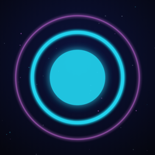

DETRÁS DEL BOTÓN
Y eso pasa cada vez que lo tocas.
Videos cortos que explican qué pasa realmente cuando tocas un botón: tu celular, tu auto, tu casa y la tecnología de todos los días, explicada en un minuto con animaciones.
Dónde vernos
Publicamos videos nuevos todos los días en YouTube Shorts, Facebook e Instagram como Detrás del Botón.
Sobre esta página
Detrás del Botón usa una herramienta propia que publica nuestros videos en nuestro canal de YouTube y nuestras páginas de redes sociales. La herramienta solo accede a nuestras propias cuentas.